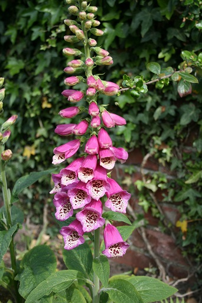
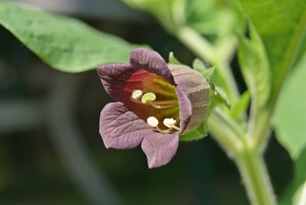
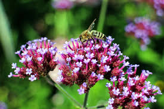
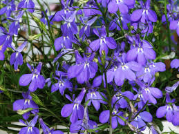
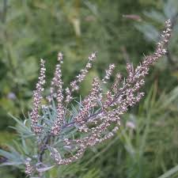

- GrowMoongarden Witch GardenConcoctIngredients Uses
Witch Gardens
All gardens are potentially Witch Gardens, however, there are certain plants that are traditional staples of the craft.
Foxglove
Foxglove or Digitalis is now an important ingredient in modern heart medications, it has a rich history and connection to the faery realm and is also extremely poisonous. It is also particularly beautiful, with bell shaped flowers growing on willowy stalks. It's a lovely way to add color and interest to corners, as it's a shade-loving plant.
Deadly Nightshade
Deadly Nightshade, aka Belladonna, is a powerful divination plant, however, it's unwise to use in ingestables, as it's extremely poisonous. It has medicial uses - usually to induce sleep or help with bronchitis. It was also used in Italy for cosmetic purposes - to dialate the eyes of beautiful women.
Vervain
Vervain, usually called Verbena in modern times, is used for beauty and protection spells and to enhance nearly any spell. It's a witchcraft staple.

Lobelia
Lobelia, which symbolizes hate and ill-will, is extremely popular in the United States as a filler for hanging baskets. It has a long-standing tradion in the arts and an excellent offering for Hecate.
Mugwort
Mugwort is an extremely useful herb for astral travel, psychic awareness, banishing, and cursing. Harmful if ingested in large amounts, it should be only used in sachets and burning in ventillated areas.